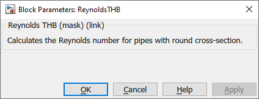

ReynoldsTHB
Path: CARNOT/Basic/Hydraulics
Purpose:
Calculate the Reynolds number.
Description:
Calculates the Reynolds Re number according to the incomming
Thermo-Hydraulic Bus (THB).
All fluid and flow properties (e.g. type of fluid and velocity) are
calculated with the values in the THB.
The block is also available in a version with individual values as inputs,
see Reynolds.
Input:
| THB | : | Thermo-Hydraulic Bus |
| Diameter | : | characteristic dimension (= diameter for pipes) in m |
Output:
| Re | : | Reynolds number in - |
Parameters and Dialog Box:

Examples:
Open the example explorer from the Matlab command window
ExampleBrowser
or load the examples via the CARNOT library.
Characteristics:
| Direct Feedthrough | : | Yes |
| Sample Time | : | Inherited from driving block |
| Vectorized | : | Yes (for input "velocity" or "dimension") |